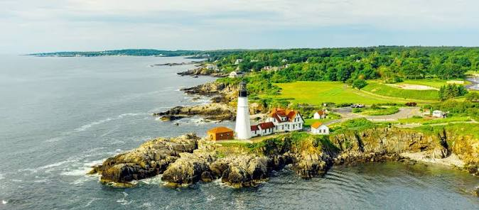

Maine ist ein Bundesstaat der Vereinigten Staaten und Teil der Region Neuengland.
Die Herkunft des Namens ist unklar. Wahrscheinlich ist er nach der französischen Landschaft Maine benannt, möglicherweise ist der Name aber auch eine Kurzform von „Mainland“
(„Festland“, „Hauptland“). Die postalische Abkürzung des Staates ist ME. Der Spitzname Maines ist The Pine Tree State („Kiefernstaat“). Die Hauptstadt ist Augusta.
Quellen- und Lizenzhinweis:
Dieser Text basiert auf dem Wikipedia-Artikel
Maine
(geänderte Fassung) und steht unter der Lizenz
Creative Commons Attribution-ShareAlike 4.0 International (CC BY-SA 4.0).
Das Bild ist von
canusa.de